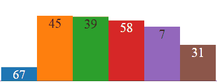
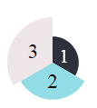

minicharts.js: easily add mini animated charts
minicharts.js is a javascript library to add easily compact animated charts in an html page. This can be especially usefull when you want to include many similar charts in a limited space like a table, a map or a complex chart.

The full documentation is available here. You can also test the library on JsFiddle.
Usage
First include the script in your html pages:
<script src="https://unpkg.com/minicharts@0.1.1/dist/minicharts.min.js"></script>This adds a global object called minicharts. Alternatively you can install the library with npm and use it with:
var minicharts = require(minicharts);Next add to your html an element that will contain the chart and that can be easily selected with a CSS selector. For instance:
<span id="mychart"></span>In your javascript, create the desired chart:
var mychart = new minicharts.Barchart("#mychart", [1, 2, 3]);Customize your charts
For now three chart types are available: Barchart, Piechart and Polarchart. Their constructor take the same parameters:
- A CSS selector
- An array containing values to represent
- An optional object containing graphical options for your chart like width, height, colors, etc.
Here is an example:
var opts = {
colors: ["#2B303A", "#92DCE5", "#EEE5E9"],
width:100,
labels: "auto",
maxValue: 3 // Important if you want to compare charts
};
var mychart = new minicharts.Polarchart("#mychart", [1, 2, 3], opts);
Update a chart
Charts object have methods setData and setOptions to update respectively data and graphical options. Here is the code use to generate the example at the top of the document:
var opts = {
width:360,
height:120,
labels: "auto",
maxValue: 100
};
function fakeData(n) {
var res = [];
for (var i = 0; i < n; i++) res.push(Math.random() * 100);
return res;
}
var mychart = new minicharts.Barchart("#mychart", fakeData(6), opts);
setInterval(function(){mychart.setData(fakeData(6))}, 1000);Contributing:
Contributions to the library are welcome and can be submitted in the form of pull requests to this repository.
License Information:
Copyright 2015-2016 RTE (France)
- RTE: http://www.rte-france.com
This Source Code is subject to the terms of the GNU General Public License, version 2 or any higher version. If a copy of the GPL-v2 was not distributed with this file, You can obtain one at https://www.gnu.org/licenses/old-licenses/gpl-2.0.en.html.
The minicharts library includes code of other open-source libraries (full copies of the license agreements used by these components are in the LICENCE file):
- d3, https://github.com/d3/d3
- tinycolor2, https://github.com/bgrins/TinyColor